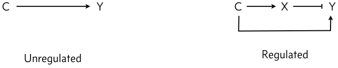

5.1 Cells respond to an unpredictable world with unpredictable components
Throughout this and the following three chapters, we will begin to explore the concept of robustness. You have likely heard the word “robustness” used in biology. While you may have a general feeling about what is meant by robustness, its precise meaning could seem fuzzy.
Living cells find themselves in a world that is constantly changing. For a soil microbe, such as Bacillus subtilis, nutrients deplete, temperatures fluctuate, humidity levels vary drastically. Cells may need to contend with antibiotics produced by other bacteria, among other challenges. Other bacteria, such as Escherichia coli, alternate between different environments: the gut of an animal, a sewer, an uncooked hamburger. In a multicellular animal, cells confront a huge variety of dynamically changing physiological states: inflammation, circadian and hormonal cycles, as well as developmental and morphological changes. Plants deal with weather, pests, seasons, variations in the soil microbiome, and many other unpredictable challenges. Beyond all of this external variation, the internal molecular components of cells also fluctuate. For example, the concentration of a protein within a cell can fluctuate stochastically, through a phenomenon called gene expression noise, that we will encounter in a subsequent chapter. And, in outbred sexually reproducing organisms, each individual organism comprises a distinct combination of genetic variants.
How can a biological circuit operate reliably despite all of this external and internal variation? Clearly it needs to have mechanisms that ensure its most critical functions are independent of, or robust to, these unavoidable sources of variation. Without some sort of robustness, circuits would be unable to function in the real world, outside of all but the most carefully controlled laboratory conditions. Robustness is a central design principle for biological circuits. Thinking in terms of robustness can provide key insights into why one circuit design may be preferable to another. It can also help to provide insights into which aspects of a circuit are functionally important.
Robustness is also important in the context of synthetic biology. There, it provides a principle that can help select among alternative potential synthetic circuit designs. One can often identify multiple circuit architectures that provide similar functions overall, but differ in their robustness to variations. For a synthetic circuit to operate reliably in a cell, robust designs may be essential, and worth their cost in additional circuit complexity.
Finally, one amusing aspect of robustness is this: non-robust circuit designs are, by definition, sensitive to their numerous biochemical parameters, most of whose values are often unmeasured and unknown. This makes it challenging to accurately model or simulate their behavior. Robust designs, in addition to benefiting the organism, also benefit the scientist, because their models, like the circuits themselves, can be analyzed with less accurate knowledge of parameter values.
Over these next four chapters, we will explore a number of different biological systems that exhibit robust and fine-tuned in various forms. Through these examples, our goal is to develop a deeper and more precise understanding of the principle of robustness, and become proficient in clearly and precisely describing the nature of robustness in various biological systems. Let us begin with the principle of robustness.
5.2 The principle of robustness
Here, we will begin with the following operational definition.
A property of a biological circuit is robust if it is nearly independent of some of the biochemical parameters that vary unavoidably from cell to cell or system to system.
5.2.1 How to make statements about robustness
It is important to be precise about what system properties are robust to what potential perturbations, as well as the operating regime or context one is considering. We say Property X of the system is robust to variations in Y in operating regime Z. That is, we specify
The property (X);
To what variations the property is robust (Y);
In what regime Z the robustness holds.
Further, robustness is quantitative: it can range from perfect (if X is totally indepenent of Y in the regime Z) to partial (if X varies by only, say, 10% over the same conditions).
Often the term is used more loosely or colloquially in biology. You may encounter statements that omit a description of the regime Z or even the variation Y. But here we will try to be as precise as possible.
5.2.2 The opposite of robustness: fine-tuned properties
A system or property of a system that is not robust can be said to be fine-tuned. A fine-tuned property of a circuit requires precise adjustment of biochemical parameters to maintain its function. For example, in open loop gene expression, the steady-state protein concentration is fine-tuned by the parameters \(\beta\) and \(\gamma\). Just like robustness, we need to define X, Y, and Z as above: what property we are talking about, what parameter variations affect its function, and in what regime do those variations have that effect.
5.3 Gene dosage varies in eukaryotic cells
Eukaryotic cells experience variation in ploidy. Chromosome numbers double in the G2 phase (after replication) compared to G1 (before replication). Ploidy can also vary in other contexts. Muscle, liver, heart, bone marrow, and placenta all contain polyploid cells with multiple copies of chromosomes. In these cases, the copy number of the whole genome is altered in the same proportion. And sometimes this comes along with an increase in total cell volume.
Sex chromosomes can be present at different numbers in males and females, leading to variation in gene dosage. For example, in humans, the X chromosome exists at one copy per cell in males but two in females. Without some adjustment mechanism, female cells would express twice as much of each X-linked protein as male cells. To avoid this, female cells randomly silence, or “inactivate,” exactly one of the two X chromosomes in each cell. (The “calico” coat pattern in cats is partly explained by mosaic clones in which different X chromosomes, carrying coat color genes, are inactivated this way.) An elaborate X inactivation mechanism achieves this astonishing feat.
Even more interesting, while an X inactivation strategy is used by humans, a totally different strategy occurs in Drosophila. Instead of females inactivating one X, males boost expression of genes on their single X chromosome by exactly two-fold. The opposite strategy is used by C. elegans, where hermaphrodites, with two X chromosomes down-regulate the expression of genes on each of their two X chromosomes by 50% to match the expression levels in males, which contain only one X chromosome.
In cancer, certain chromosomal regions can be duplicated multiple times, amplifying their copy number. These amplifications can drive cancer cell survival and replication. This is a different, aberrant, context in which gene dosage can similarly vary.
5.4 Gene dosage compensation is important for synthetic biology and gene therapy applications.
In synthetic biology and metabolic engineering, there is interest in designing genetic systems that can operate predictably across different contexts, despite all of this dosage variation.
Gene therapies seek to provide cells with a replacement copy of a gene that is otherwise mutated or inactivated in the patient. This gene could be inserted into cells in different ways. One currently popular approach uses adeno-associated virus (AAV) vectors, which can efficiently enter cells and allow expression of their DNA cargo. With these systems, it is impossible to precisely control the number of copies of the gene that are delivered to each cell—some cells may receive many copies, while others receive fewer, or none. Furthermore, with vectors that integrate in the genome, the precise location of integration can influence the level of expression of the gene. As a result, even if each cell received the same number of copies, those copies might express at different levels in different cells. Thus, without some mechanism to compensate for dosage variation, the gene therapy will be expressed at a range of different levels in different cells.
If merely providing the protein at any level were sufficient, this variability might be tolerable. However, in some cases too much of the “good” replacement protein can be nearly as bad as too little. One example of this “Goldilocks” problem occurs in Rett syndrome, a devastating condition that results from loss of function of the gene MeCP2, which is on the X chromosome. In heterozygous females, half of cells express mutant MeCP2, leading to disease. Yet overexpression of MeCP2 is also toxic, leading to a condition known as MeCP2 duplication syndrome. For these reasons, gene dosage compensation could be important for gene therapy as well as for endogenous organismal regulation.
5.5 Incoherent feed-forward loops can provide gene dosage compensation
Recent work has shown that the incoherent feed-forward loop (IFFL) can provide a remarkably simple mechanism for gene dosage compensation. Here, we will explore two different IFFL designs that use either transcriptional or post-transcriptional (micro-RNA) regulation in bacteria or mammalian cells, respectively.
We start with a beautiful demonstration of dosage compensation in bacteria by [Segall-Shapiro, Sontag, and Voigt ((Segall-Shapiro et al. 2018)).
The authors created a synthetic system that ensures that the concentration of an expressed protein in the cell is robust to variation in the copy number of its gene. Consider our usual gene expression system, except we now explicitly include the gene copy number, denoted \(C\), as a parameter. Assuming the gene copies are independent of one another and otherwise identical, the dynamics of our constitutively expressed gene can be written,
\[
\begin{align}
\frac{\mathrm{d}y}{\mathrm{d}t} = \beta C - \gamma y
\end{align}
\tag{5.1}\]
Where \(y\) is the concentration is our protein of interest, \(\beta\) is the production rate from each copy of the gene and \(\gamma\) is the degradation rate, as usual. The steady-state value of \(y\), denoted \(y_\mathrm{ss}\), is then
The steady state Y concentration is linearly dependent on the copy number of the gene, as we would expect for this simple system.
Now consider what happens when we make the system a little more interesting. Suppose we add a repressor, X, that can repress expression of Y. Further, suppose X and Y are encoded in adjacent (but independently expressed) genes, and therefore share the same copy number within the cell. This type of arrangement produces a kind of IFFL, in which gene copy number multiples expression of both X and Y, and the product of X further represses expression of Y.

Left, a simple circuit without a dosage compensating IFFL architecture. Right, a circuit with IFFL-based dosage compensation.
To see how the IFFL affects steady state Y expression, we start by writing down ODEs for X and Y in the IFFL system. We allow each gene to have a distinct transcription rate, either \(\beta_x\) or \(\beta_y\), respectively, and the same Hill-type repression that we have considered previously. For simplicity, we will assume that X and Y have the same effective degradation rate: \(\gamma_x = \gamma_y = \gamma\).
\[
\begin{align}
\frac{\mathrm{d}x}{\mathrm{d}t} &= \beta_x C - \gamma x, \\[1em]
\frac{\mathrm{d}y}{\mathrm{d}t} &= \frac{\beta_yC}{1 + (x/k)^n} - \gamma y.
\end{align}
\tag{5.3}\]
Non-dimensionalizing, we obtain:
\[
\begin{align}
\frac{\mathrm{d}x}{\mathrm{d}t} &= \beta \, C - x, \\[1em]
\frac{\mathrm{d}y}{\mathrm{d}t} &= \frac{C}{1 + x^n} - y,
\end{align}
\tag{5.4}\]
where we have nondimensionalized \(x\) and \(y\) according to \(x \leftarrow x/k\) and \(y \leftarrow y/(\beta_y/\gamma)\) and defined \(\beta = \beta_x / k \gamma\).
When \(n=1\), this is just \(y_\mathrm{ss} = 1/\beta\). In other words, when \(n=1\), the expression of \(Y\) becomes independent of, or robust to, copy number, as desired! Further, \(n=1\) is not an unrealistic assumption. In fact, many prokaryotic gene regulation systems exhibit simple linear repression, with \(n=1\).
We see that as long as the copy number is high enough, the IFFL makes steady state expression of Y independent of copy number\(C\). What a remarkable thing! Just by adding one additional regulator, changes in gene dosage can be compensated out!
Furthermore, even though expression is independent of copy number, it still remains tunable by adjusting \(\beta\). Stronger promoters, counter-intuitively, are predicted to reduce the protein expression level.
One might, however, still ask how sensitive this capability is to the Hill coefficient of repression. Does it require\(n=1\)? We can plot the steady state dimensionless Y concentration, allowing for varying \(\beta\) and \(n\).
Code
# Initial parameters on plotbeta =1n =1# Build plotp = bokeh.plotting.figure( frame_width=300, frame_height=150, x_axis_label="copy number", y_axis_label="dimensionless yₛₛ",)# Plot unregulated caseC = np.arange(201)y = C / (1+ (beta * C) ** n)cds = bokeh.models.ColumnDataSource(dict(C=C, y=y))p.scatter(source=cds, x="C", y="y")# Sliders for controlling parametersbeta_slider = bokeh.models.Slider( title="β", start=-1, end=1, step=0.1, value=0, width=150,format=bokeh.models.CustomJSTickFormatter(code="return Math.pow(10, tick).toFixed(2)"),)n_slider = bokeh.models.Slider( title="n", start=0.1, end=4, step=0.1, value=1, width=150)# JavaScript code for callbackjs_code ="""// Extract data from source and sliderslet C = cds.data['C'];let y = cds.data['y'];let beta = Math.pow(10, beta_slider.value);let n = n_slider.value;// Update steady state levelsfor (let i = 0; i < C.length; i++) { y[i] = C[i] / (1 + Math.pow(beta * C[i], n));}// Emit changescds.change.emit();"""callback = bokeh.models.CustomJS( args=dict(cds=cds, beta_slider=beta_slider, n_slider=n_slider), code=js_code)# Link callbackbeta_slider.js_on_change("value", callback)n_slider.js_on_change("value", callback)# Build layoutlayout = bokeh.layouts.row( p, bokeh.layouts.Spacer(width=30), bokeh.layouts.column(beta_slider, n_slider))bokeh_show(layout)
Figure 5.1: Output of a dosage-compensated IFFL circuit.
In fact, it does. We can see that \(n=1\) generates dosage-independent behavior, although the values of \(y_{\mathrm{ss}}\) still varies with copy number when the copy number values are low. This is because in our derivation above we relied on the assumption that the copy number, \(C\), is large—when this assumption is violated at small values of \(C\), our derivation that resulted in a dosage-independent result is no longer valid.
The interactive plot allows us to visualize that the threshold for what determines “small” values of \(C\) decreases as we increase \(\beta\), making the window of copy number values for which the system is robust to gene dosage variations larger. It can be shown that the relevant regime for dosage-independent values of \(y_{\mathrm{ss}}\) is when \(\beta C \gg 1\).
With \(n > 1\), \(y_\mathrm{ss}\) responds non-monotonically to copy number, producing a peak in Y concentration at intermediate copy numbers. By contrast, if \(n < 1\), we observe an attenuated incomplete dosage compensation represented by a sub-linear relationship between copy number and \(y_{\mathrm{ss}}\).
By exploring the plot above, we can see that robustness to dosage compensation is not just a static, qualitative property that the system either does or does not exhibit. Even in the case of \(n=1\), we can see that if \(\beta\) is small then there is a nontrivial range of copy number values (between 1 and ≈10 at \(\beta = 1\)) for which the system is not robust to variations in copy number. This illustrates the importance of precise statements about robustness.
For this system, we might frame a robustness statement as:
For the I1-FFL dosage compensation circuit, the steady state concentration of Y is robust to variations in copy number \(C\) in the regime where \(n=1\) and \(\beta C \gg 1\). In general, since \(C \ge 1\), \(\beta \gg 1\) is sufficient to ensure robustness.
In contrast, the a fine-tuned-ness statement is:
The I1-FFL dosage compensation circuit is not robust to copy number fluctuations if the Hill coefficient \(n\) is anything other than unity.
5.6 Synthetic biology enables experimental tests of dosage compensation in bacteria
To test the prediction that the IFFL can dosage compensate expression, Voigt and colleagues designed a synthetic gene regulatory system incorporating a variety of designed regulatory elements. As a repressor, they used Transcription activator-like effector (TALE) proteins derived from Xanthamonas bacteria that infect plants. These proteins exhibit a programmable structure based on modular ≈34 amino acid units that recognize different DNA dinucleotides. By concatenating these modules, one can design TALE proteins that target desired DNA binding sites. (Before the emergence of CRISPR as a supremely powerful and versatile programmable gene editing system, TALEs were poised to allow many similar functions.) For the purposes of this experiment, key properties of the TALE repressors include their ability to tightly (≈100-fold) repress target promoters in bacteria and their ability, demonstrated in this paper, to provide linearly sensitive (\(n=1\)) repression. To control the copy number, the authors expressed each system from a series of plasmids with different copy numbers. The plot below (data digitized from (Segall-Shapiro et al. 2018)) demonstrates the remarkable ability of this system to eliminate dosage-dependence.
An unregulated promoter exhibits linear sensitivity to dosage. By contrast, the IFFL system, produces dosage-independent gene regulation across a broad range of copy numbers.
While expression could be made independent of gene copy number, it could still be tuned by using promoters of different strengths. This corresponds to varying \(\beta_y\) in the equations above. The plot below (again with data digitized from (Segall-Shapiro et al. 2018)), depicts gene expression as a function of copy number for promoters of increasing strength from light to dark color.
For all promoters, while copy number can vary over two orders of magnitude, expression level varies at most be a factor of two or three.
Segall-Shapiro et al conclude:
This project started with a simple question. Could we design a promoter that produces the same protein concentration no matter where it is placed? Based on a simple model, we were able to design a class of stabilized promoter that maintained the same level of gene expression irrespective of the plasmid backbone or its location in the genome. This was achieved by harnessing the feedforward loop, a common motif in natural regulatory networks that is responsible for maintaining homeostasis between proteins, implementing dynamic ordering and producing a pulse of gene expression. Although our stabilized promoter was designed to buffer gene expression against the effects of changing DNA copy number, our results demonstrated broad robustness of the promoter design to genome mutations and medium composition. Collectively, robustness to these conditions eliminates much of the context dependence that plagues precision genetic engineering.
5.6.1 Dosage compensation through ultra-sensitive negative feedback
The IFFL is not the only way to achieve dosage compensated expression. Consider a negative autoregulatory feedback loop, similar to the ones we considered in Chapter 2, but with very high ultrasensitivity. In this system, changes in gene dosage that strongly affect the protein production rate can have much more modest effects on the steady-state protein level. The reason can be seen graphically in the following plot. Across varying gene dosages, the intersection of production and removal rates occurs when \(x\approx k\), since that is when production rate suddenly drops off and crosses the removal line.
Demonstration of dosage compensation as a result of high ultrasensitivity.
5.7 Single-gene miRNA-based IFFLs provide dosage compensation in mammalian cells
The strategy above appears to provide nearly ideal dosage compensation in bacteria. But several features make it unsuitable for mammalian gene therapies. For one thing, TALEs are large genes that take up a lot of the limited real estate of gene therapy vectors such as AAVs. Another issues is that it is generally more difficult in mammalian cells to isolate adjacent genes. A constitutive “\(X\)” could lead to undesired expression of an adjacent target gene, \(Y\). Finally, in a mammalian cell, gene regulation can be bursty (as we shall see soon in this course) and there can be delays of many hours for the transcription and translation of the constitutively expressed repressor, potentially leading to pulses and other dynamic behaviors.
In 2011, Bleris and colleagues ((Bleris et al. 2011)) examined several different IFFL designs in mammalian cells. Two of their circuits used microRNA (miRNA) to post-transcriptionally implement the inhibition of Y by X. The most compact circuit is shown below.
In this simple circuit, the small molecule doxycycline (dox) can be used to induce expression of two divergently oriented genes. Dox binds to the reverse tet trans-activator protein (rtTA), allowing it to bind to a casette of 7 binding sites. Once bound, it activates expression of cyan and red fluorescent proteins. The two fluorescent proteins differ, however, in a crucial way: The protein coding sequence of the red protein is interrupted by an intron, an element that is removed in the nucleus through a process called splicing. Within the element is a micro-RNA that can be further processed and integrated into a complex called RISC which can specifically target and repress expression of the spliced mRNA in the cytoplasm via a target site in its 3’ untranslated region (UTR). This design thus constitutes a single gene I1-FFL!
In this astonishingly compact unit, increasing gene copy number should produce more mRNA encoding the red fluorescent protein as well as more miRNA to repress it. Does this design produce dosage compensation?
Addressing this question rigorously would require analyzing the various steps of splicing and processing of the miRNA. For simplicity here, we will consider a simplified model that suggests dosage compensation might be possible.
Because the relevant dynamics occur at the RNA level, we will change notation slightly. We will assume that the processed miRNA in its active RISC complex, denoted \(r\), is produced at a rate proportional to gene dosage, \(C\), and is degraded at a constant rate, \(\gamma_r\). Similarly, we assume the mRNA, denoted \(m\), is also produced at a rate proportional to copy number. In general, the production rates for the two species can differ, since producing mature mRNA and producing a mature RISC-miRNA complex involve distinct steps. We further assume that miRNA and mRNA interact at a rate governed by mass action kinetics, i.e. proportional to \(r \times m\) , with rate constant k, and that this interaction enzymatically destroys \(m\) but does not affect \(r\). (Depending on the miRNA system, this need not be the case.) Finally, we assume that the mRNA can degrade with a rate constant \(m\). With these assumptions, we can write down ordinary differential equations for the system:
\[
\begin{align}
\frac{\mathrm{d}r}{\mathrm{d}t} &= \beta_r C - \gamma_r r, \\[1em]
\frac{\mathrm{d}m}{\mathrm{d}t} &= \beta_m C - k \,r \,m - \gamma_m m.
\end{align}
\tag{5.7}\]
To nondimensionalize, we set: - \(\tilde{t} = \gamma_r t\). This rescales time in units of the RISC lifetime. - \(\tilde{r} = r/(\beta_r/\gamma_r)\). This effectively normalizes \(r\) by its unregulated steady-state value for single copy expression. - \(\tilde{m} = m/(\beta_m/\gamma_m)\). This similarly normalizes \(m\). - \(\gamma = \gamma_m/\gamma_r\) and \(\kappa = \beta_r k/\gamma_r \gamma_m\). These represent the key dimensionless parameter ratios that will be important later.
\[
\begin{align}
\frac{\mathrm{d}\tilde{r}}{\mathrm{d}\tilde{t}} &= C - \tilde{r}, \\[1em]
\gamma^{-1}\,\frac{\mathrm{d}\tilde{m}}{\mathrm{d}\tilde{t}} &= C - \kappa \,\tilde{r} \,\tilde{m} - \tilde{m}.
\end{align}
\tag{5.8}\]
At steady state, the time derivatives vanish, and we have
This is the same functional form as we saw in the synthetic I1-FFL E. coli dosage compensation circuit. In the regime where \(\kappa C \gg 1\), the steady state mRNA level becomes independent of copy number. To understand what this means in terms of requirements of the circuit function, let us write \(\kappa C\) in an instructive way. We know that the dimensional steady state concentration of active RISC complex is
Let \(m_\mathrm{ss}\) be the dimensional steady state concentration of mRNA. Then, the ratio of RISC-dependent to RISC-independent degradation of mRNA is
\[
\begin{align}
\frac{\text{rate of degradation by RISC}}{\text{rate of unassisted degradation}} = \frac{k\,r_\mathrm{ss}\,m_\mathrm{ss}}{\gamma_m m_\mathrm{ss}} = \frac{k \beta_r C/\gamma_r}{\gamma_m} = \kappa C.
\end{align}
\tag{5.12}\]
So, in order to have dosage independence, we need fast degradation by RISC relative to unassisted degradation or dilution. This is accomplished by having high copy number (thereby producing a lot of RISC), a fast production rate of RISC (high \(\beta_r\)), fast kinetics of degradation by RISC (high \(k\)), slow degradation of RISC (low \(\gamma_m\)), and slow unassisted degradation of mRNA (low \(\gamma_m\)).
The dimensional steady state of mRNA concentration is, in the limit of \(\kappa C \gg 1\),
Importantly, the copy number of mRNA can by tuned by adjusting the production rate of mRNA, \(\beta_m\) without destroying the copy-number-independence of the mRNA levels.
The following plots, from (Bleris et al. 2011), show that in an unregulated system, the two fluorescent proteins would exhibit a linear relationship (right). but with the miRNA IFFL, the regulated red fluorescent target approaches a saturating value at higher levels of expression. (The dynamic range of expression levels is modest here—exploring a broader range would help to reveal the full behavior of this system). These data suggest that dosage compensation can be achieved with a single, post-transcriptionally self-regulating gene implementing a variant of the I1-IFFL motif.
At first glance, the incoherent feed-forward loop is as mysterious as it is prevalent. Why would one want to regulate the same target gene in two opposite ways? The examples above and those in the previous chapter suggest a few of its many dynamic functions: generating adaptive responses to step increases in input, accelerating responses, and, perhaps most dramatically, making gene expression independent of the dosage of the gene itself. IFFLs have also been shown to play other, related, roles as well. For example, in a phenomenon known as fold-change detection ((Goentoro and Kirschner 2009; Goentoro et al. 2009)), system outputs can depend only on the fold increase, but not absolute values, of their inputs. IFFLs can help to enable this capability.
Now that we know that an IFFL can provide dosage compensation, one can also ask why every gene is not dosage compensated? Is it enough to merely dosage compensate regulatory proteins and not their targets? Is the cost of implementing the added regulation so high that it can only be justified for those genes for which too much activity would be especially deleterious? Are there distinct, dosage compensating mechanisms that might also be operating in some genes?
We have also now encountered our first formal introduction to the principle of robustness. We have learned that robustness properties can be some of the most striking functions a system can perform, but also that such behaviors always carry with them caveats about the regimes in which the robustnesses can actually hold. In the following chapters we will continue to explore this theme further across examples as diverse as bacterial motility and error correction in gene expression machinery.
Python implementation: CPython
Python version : 3.13.13
IPython version : 9.12.0
numpy : 2.2.6
bokeh : 3.9.0
jupyterlab: 4.5.6
Bleris, Leonidas, Zhen Xie, David Glass, Asa Adadey, Eduardo D. Sontag, and Yaakov Benenson. 2011. “Synthetic Incoherent Feedforward Circuits Show Adaptation to the Amount of Their Genetic Template.”Molecular Systems Biology 7: 519. https://doi.org/10.1038/msb.2011.49.
Goentoro, Lea, and Marc W. Kirschner. 2009. “Evidence That Fold-Change, and Not Absolute Level, of β-Catenin Dictates Wnt Signaling.”Molecular Cell 36 (5): 872–84. https://doi.org/10.1016/j.molcel.2009.11.017.
Goentoro, Lea, Oren Shoval, Marc W. Kirschner, and Uri Alon. 2009. “The Incoherent Feedforward Loop Can Provide Fold-Change Detection in Gene Regulation.”Molecular Cell 36 (5): 894–99. https://doi.org/10.1016/j.molcel.2009.11.018.
Segall-Shapiro, Thomas H, Eduardo D Sontag, and Christopher A Voigt. 2018. “Engineered Promoters Enable Constant Gene Expression at Any Copy Number in Bacteria.”Nature Biotechnology 36 (4): 352–58. https://doi.org/10.1038/nbt.4111.